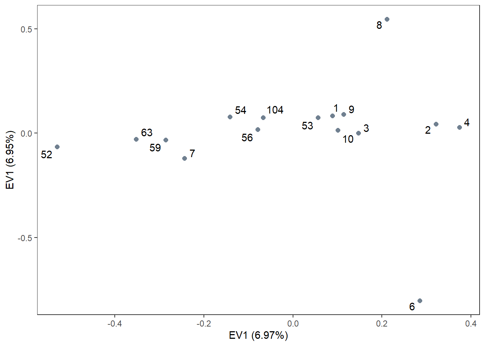
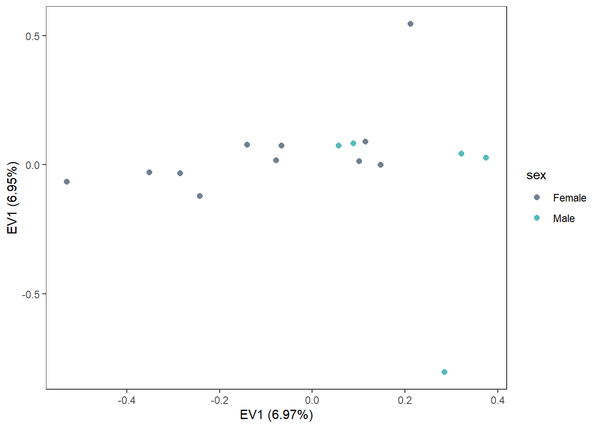

3 Outlier Analysis - High Coverage
3.2 Data
meta <-
read.csv("Input Files/metadata.csv") %>%
mutate(seq.id=gsub("B5GAN", "", seq.id),
condition=gsub("1", "Alive", condition),
condition=gsub("2", "Fresh Dead", condition),
condition=gsub("3", "Mod Decomp", condition),
age.class=factor(age.class, levels=c("Pup/Calf", "Yearling",
"Subadult", "Adult", "Unknown")),
seq.run=factor(seq.run, levels=c("1", "2")))3.3 VCF to GDS
# Load VCF file and create GDS file
# snpgdsVCF2GDS("C:/Users/Christina/OneDrive - University of Maine System/pv-wgs/30xSamples_Genotype_nosex_edit.vcf",
# "C:/Users/Christina/OneDrive - University of Maine System/pv-wgs/30xsamples_Genotype.gds",
# method="biallelic.only")
snpgdsSummary("C:/Users/Christina/OneDrive - University of Maine System/pv-wgs/30xSamples_Genotype_nosex.gds")## The file name: C:\Users\Christina\OneDrive - University of Maine System\pv-wgs\30xsamples_Genotype_nosex.gds
## The total number of samples: 20
## The total number of SNPs: 3908010
## SNP genotypes are stored in SNP-major mode (Sample X SNP).3.4 LD-based SNP Pruning
Recursively removes SNPs within a sliding window based on pairwise genotypic correlation - remove SNPs in linkage disequilibrium with each other. Conducted chromosome by chromosome (SNPs in a chromosome are independent of SNPs on other chromosomes).Generates set of SNPs that are independent of each other.
Many SNPs are going to be in LD to each other based on ancestry. Researchers will LD prune to reduce the chance of false-negatives and look for ways to prioritize SNPs within significant GWAS hits to increase the chance of finding something casual.
## SNP pruning based on LD:
## Excluding 1,086,533 SNPs (monomorphic: TRUE, MAF: 0.005, missing rate: 0.05)
## # of samples: 20
## # of SNPs: 2,821,477
## using 1 thread
## sliding window: 500,000 basepairs, Inf SNPs
## |LD| threshold: 0.2
## method: composite
## Chrom 1: |====================|====================|
## 2.04%, 6,682 / 327,390 (Fri Jan 24 12:09:10 2025)
## Chrom 2: |====================|====================|
## 1.98%, 7,169 / 361,795 (Fri Jan 24 12:09:10 2025)
## Chrom 3: |====================|====================|
## 1.94%, 6,041 / 310,679 (Fri Jan 24 12:09:10 2025)
## Chrom 4: |====================|====================|
## 2.05%, 7,295 / 355,492 (Fri Jan 24 12:09:10 2025)
## Chrom 5: |====================|====================|
## 1.81%, 3,448 / 190,039 (Fri Jan 24 12:09:10 2025)
## Chrom 6: |====================|====================|
## 2.20%, 5,258 / 239,224 (Fri Jan 24 12:09:10 2025)
## Chrom 7: |====================|====================|
## 2.21%, 3,714 / 168,421 (Fri Jan 24 12:09:10 2025)
## Chrom 8: |====================|====================|
## 2.31%, 2,762 / 119,709 (Fri Jan 24 12:09:10 2025)
## Chrom 9: |====================|====================|
## 2.94%, 4,966 / 169,064 (Fri Jan 24 12:09:10 2025)
## Chrom 10: |====================|====================|
## 2.02%, 4,055 / 200,553 (Fri Jan 24 12:09:11 2025)
## Chrom 11: |====================|====================|
## 2.00%, 5,089 / 254,638 (Fri Jan 24 12:09:11 2025)
## Chrom 12: |====================|====================|
## 2.28%, 6,946 / 305,075 (Fri Jan 24 12:09:11 2025)
## Chrom 13: |====================|====================|
## 2.06%, 5,692 / 276,329 (Fri Jan 24 12:09:11 2025)
## Chrom 14: |====================|====================|
## 2.17%, 5,753 / 264,542 (Fri Jan 24 12:09:11 2025)
## Chrom 16: |====================|====================|
## 1.76%, 6,427 / 365,060 (Fri Jan 24 12:09:11 2025)
## 81,297 markers are selected in total.snpset.id <- unlist(unname(snpset))
snpset2 <- snpgdsLDpruning(geno, ld.threshold=0.1, autosome.only=FALSE)## SNP pruning based on LD:
## Excluding 1,086,533 SNPs (monomorphic: TRUE, MAF: 0.005, missing rate: 0.05)
## # of samples: 20
## # of SNPs: 2,821,477
## using 1 thread
## sliding window: 500,000 basepairs, Inf SNPs
## |LD| threshold: 0.1
## method: composite
## Chrom 1: |====================|====================|
## 2.11%, 6,895 / 327,390 (Fri Jan 24 12:09:13 2025)
## Chrom 2: |====================|====================|
## 2.05%, 7,419 / 361,795 (Fri Jan 24 12:09:13 2025)
## Chrom 3: |====================|====================|
## 2.02%, 6,267 / 310,679 (Fri Jan 24 12:09:13 2025)
## Chrom 4: |====================|====================|
## 2.12%, 7,519 / 355,492 (Fri Jan 24 12:09:13 2025)
## Chrom 5: |====================|====================|
## 1.86%, 3,536 / 190,039 (Fri Jan 24 12:09:13 2025)
## Chrom 6: |====================|====================|
## 2.26%, 5,411 / 239,224 (Fri Jan 24 12:09:13 2025)
## Chrom 7: |====================|====================|
## 2.28%, 3,840 / 168,421 (Fri Jan 24 12:09:13 2025)
## Chrom 8: |====================|====================|
## 2.36%, 2,821 / 119,709 (Fri Jan 24 12:09:13 2025)
## Chrom 9: |====================|====================|
## 2.96%, 4,999 / 169,064 (Fri Jan 24 12:09:13 2025)
## Chrom 10: |====================|====================|
## 2.05%, 4,117 / 200,553 (Fri Jan 24 12:09:14 2025)
## Chrom 11: |====================|====================|
## 2.06%, 5,240 / 254,638 (Fri Jan 24 12:09:14 2025)
## Chrom 12: |====================|====================|
## 2.33%, 7,098 / 305,075 (Fri Jan 24 12:09:14 2025)
## Chrom 13: |====================|====================|
## 2.11%, 5,825 / 276,329 (Fri Jan 24 12:09:14 2025)
## Chrom 14: |====================|====================|
## 2.21%, 5,837 / 264,542 (Fri Jan 24 12:09:14 2025)
## Chrom 16: |====================|====================|
## 1.83%, 6,670 / 365,060 (Fri Jan 24 12:09:14 2025)
## 83,494 markers are selected in total.snpset.id2 <- unlist(unname(snpset2))
snpset3 <- snpgdsLDpruning(geno, ld.threshold=0.5, autosome.only=FALSE)## SNP pruning based on LD:
## Excluding 1,086,533 SNPs (monomorphic: TRUE, MAF: 0.005, missing rate: 0.05)
## # of samples: 20
## # of SNPs: 2,821,477
## using 1 thread
## sliding window: 500,000 basepairs, Inf SNPs
## |LD| threshold: 0.5
## method: composite
## Chrom 1: |====================|====================|
## 4.11%, 13,448 / 327,390 (Fri Jan 24 12:09:16 2025)
## Chrom 2: |====================|====================|
## 4.09%, 14,799 / 361,795 (Fri Jan 24 12:09:16 2025)
## Chrom 3: |====================|====================|
## 4.07%, 12,641 / 310,679 (Fri Jan 24 12:09:16 2025)
## Chrom 4: |====================|====================|
## 4.18%, 14,845 / 355,492 (Fri Jan 24 12:09:16 2025)
## Chrom 5: |====================|====================|
## 3.94%, 7,494 / 190,039 (Fri Jan 24 12:09:17 2025)
## Chrom 6: |====================|====================|
## 4.45%, 10,653 / 239,224 (Fri Jan 24 12:09:17 2025)
## Chrom 7: |====================|====================|
## 4.51%, 7,601 / 168,421 (Fri Jan 24 12:09:17 2025)
## Chrom 8: |====================|====================|
## 4.50%, 5,391 / 119,709 (Fri Jan 24 12:09:17 2025)
## Chrom 9: |====================|====================|
## 5.04%, 8,524 / 169,064 (Fri Jan 24 12:09:17 2025)
## Chrom 10: |====================|====================|
## 4.16%, 8,339 / 200,553 (Fri Jan 24 12:09:17 2025)
## Chrom 11: |====================|====================|
## 4.16%, 10,582 / 254,638 (Fri Jan 24 12:09:17 2025)
## Chrom 12: |====================|====================|
## 4.42%, 13,487 / 305,075 (Fri Jan 24 12:09:18 2025)
## Chrom 13: |====================|====================|
## 4.24%, 11,711 / 276,329 (Fri Jan 24 12:09:18 2025)
## Chrom 14: |====================|====================|
## 4.23%, 11,181 / 264,542 (Fri Jan 24 12:09:18 2025)
## Chrom 16: |====================|====================|
## 3.81%, 13,903 / 365,060 (Fri Jan 24 12:09:18 2025)
## 164,599 markers are selected in total.3.5 PCA
3.5.1 PCA Original
3.5.1.1 Run PCA
## Principal Component Analysis (PCA) on genotypes:
## Excluding 0 SNP (monomorphic: TRUE, MAF: NaN, missing rate: NaN)
## # of samples: 20
## # of SNPs: 81,297
## using 2 threads
## # of principal components: 32
## PCA: the sum of all selected genotypes (0,1,2) = 2673881
## CPU capabilities: Double-Precision SSE2
## Fri Jan 24 12:09:18 2025 (internal increment: 65328)
## [..................................................] 0%, ETC: --- [==================================================] 100%, completed, 1s
## Fri Jan 24 12:09:19 2025 Begin (eigenvalues and eigenvectors)
## Fri Jan 24 12:09:19 2025 Done.3.5.1.4 Plot
Seemingly no structure, but maybe outliers (5, 51, 58)
plot <-
ggplot(pca_data, aes(x=EV1, y=EV2)) +
geom_point(size=2, colour="slategray") +
labs(x=labelx,
y=labely) +
geom_text_repel(label=pca_data$sample.no) +
theme_bw() +
theme(panel.grid=element_blank())
plot
3.5.1.5 Plot PCA ~ Factors
classification <-
ggplot(pca_data, aes(x=EV1, y=EV2, color=classification)) +
geom_point(size=2) +
scale_color_manual(values=c("slategray", "#58baba")) +
labs(x=labelx,
y=labely) +
theme_bw() +
theme(panel.grid=element_blank())
classification
pdv <-
ggplot(pca_data, aes(x=EV1, y=EV2, color=pdv)) +
geom_point(size=2) +
scale_color_manual(values=c("slategray", "#58baba", "coral")) +
labs(x=labelx,
y=labely) +
theme_bw() +
theme(panel.grid=element_blank())
pdv
sex <-
ggplot(pca_data, aes(x=EV1, y=EV2, color=sex)) +
geom_point(size=2) +
scale_color_manual(values=c("slategray", "#58baba")) +
labs(x=labelx,
y=labely) +
theme_bw() +
theme(panel.grid=element_blank())
sex
age <-
ggplot(pca_data, aes(x=EV1, y=EV2, color=age.class)) +
geom_point(size=2) +
scale_color_manual(values=c("slategray", "#58baba", "coral", "magenta")) +
labs(x=labelx,
y=labely) +
theme_bw() +
theme(panel.grid=element_blank())
age
condition <-
ggplot(pca_data, aes(x=EV1, y=EV2, color=condition)) +
geom_point(size=2) +
scale_color_manual(values=c("slategray", "#58baba", "coral")) +
labs(x=labelx,
y=labely) +
theme_bw() +
theme(panel.grid=element_blank())
condition
seqrun <-
ggplot(pca_data, aes(x=EV1, y=EV2, color=seq.run)) +
geom_point(size=2) +
scale_color_manual(values=c("slategray", "#58baba")) +
labs(x=labelx,
y=labely) +
theme_bw() +
theme(panel.grid=element_blank())
seqrun
3.5.2 PCA w/o Outliers
After two iterations. First removed 51, 58, then removed 5, 72.
3.5.2.1 Possible outliers
outlier_meta <-
meta %>%
filter(sample.no=="51" |
sample.no=="58" |
sample.no=="5" |
sample.no=="72") %>%
select(!seq.id & !seq.depth) %>%
setNames(., nm=c("#", "sample", "run", "category", "strand date", "lat", "long",
"condition", "sex", "age", "pdv"))
outlier_meta %>%
kable() %>%
kable_styling("basic", font_size=12,
position="center")| # | sample | run | category | strand date | lat | long | condition | sex | age | pdv | NA | NA |
|---|---|---|---|---|---|---|---|---|---|---|---|---|
| 5 | MME-18-568Pv | 1 | Non-survivor | 8/31/2018 | 43.16199 | -70.61980 | Alive | Male | Yearling | Positive | 1148 | 58.7219 |
| 51 | MME-18-120Pv | 2 | Non-survivor | 7/3/2018 | 43.66643 | -70.23860 | Alive | Female | Yearling | N/A | 1696 | 58.1716 |
| 58 | IFAW20-069Pv | 2 | Survivor | 5/7/2020 | 41.67004 | -69.94767 | Mod Decomp | Female | Adult | Negative | 4200 | 58.9652 |
| 72 | MME-19-149Pv | 2 | Survivor | 5/21/2019 | 43.83349 | -69.64360 | Alive | Male | Pup/Calf | Positive | 4320 | 58.9553 |
3.5.2.2 Run PCA
samples_outlier <-
meta %>%
filter(seq.depth=="30x") %>%
filter(!sample.no=="51" &
!sample.no=="58" &
!sample.no=="5" &
!sample.no=="72")
pca_outlier <-
snpgdsPCA(geno,
snp.id=snpset.id,
sample.id=samples_outlier$seq.id,
num.thread=2,
autosome.only=FALSE)## Principal Component Analysis (PCA) on genotypes:
## Excluding 11,473 SNPs (monomorphic: TRUE, MAF: NaN, missing rate: NaN)
## # of samples: 16
## # of SNPs: 69,824
## using 2 threads
## # of principal components: 32
## PCA: the sum of all selected genotypes (0,1,2) = 1782304
## CPU capabilities: Double-Precision SSE2
## Fri Jan 24 12:09:20 2025 (internal increment: 81664)
## [..................................................] 0%, ETC: --- [==================================================] 100%, completed, 0s
## Fri Jan 24 12:09:20 2025 Begin (eigenvalues and eigenvectors)
## Fri Jan 24 12:09:20 2025 Done.3.5.2.4 Configure plot data
pca_data_outlier <-
data.frame(sample.id = pca_outlier$sample.id,
EV1 = pca_outlier$eigenvect[,1],
EV2 = pca_outlier$eigenvect[,2],
stringsAsFactors = FALSE) %>%
merge(., meta, by.x="sample.id", by.y="seq.id")
labelx <-
paste0("EV1 (", pc.percent_outlier[1], "%)", sep="")
labely <-
paste0("EV1 (", pc.percent_outlier[2], "%)", sep="")3.5.2.5 Plot
Seemingly no structure, but maybe outliers (5, 51, 58)
plot_outlier <-
ggplot(pca_data_outlier, aes(x=EV1, y=EV2)) +
geom_point(size=2, colour="slategray") +
labs(x=labelx,
y=labely) +
geom_text_repel(label=pca_data_outlier$sample.no) +
theme_bw() +
theme(panel.grid=element_blank())
plot_outlier
3.5.2.6 Plot PCA ~ Factors
classification_outlier <-
ggplot(pca_data_outlier, aes(x=EV1, y=EV2, color=classification)) +
geom_point(size=2) +
scale_color_manual(values=c("slategray", "#58baba")) +
labs(x=labelx,
y=labely) +
theme_bw() +
theme(panel.grid=element_blank())
classification_outlier
pdv_outlier <-
ggplot(pca_data_outlier, aes(x=EV1, y=EV2, color=pdv)) +
geom_point(size=2) +
scale_color_manual(values=c("slategray", "#58baba", "coral")) +
labs(x=labelx,
y=labely) +
theme_bw() +
theme(panel.grid=element_blank())
pdv_outlier
sex_outlier <-
ggplot(pca_data_outlier, aes(x=EV1, y=EV2, color=sex)) +
geom_point(size=2) +
scale_color_manual(values=c("slategray", "#58baba")) +
labs(x=labelx,
y=labely) +
theme_bw() +
theme(panel.grid=element_blank())
sex_outlier
age_outlier <-
ggplot(pca_data_outlier, aes(x=EV1, y=EV2, color=age.class)) +
geom_point(size=2) +
scale_color_manual(values=c("slategray", "#58baba", "coral", "magenta")) +
labs(x=labelx,
y=labely) +
theme_bw() +
theme(panel.grid=element_blank())
age_outlier
condition_outlier <-
ggplot(pca_data_outlier, aes(x=EV1, y=EV2, color=condition)) +
geom_point(size=2) +
scale_color_manual(values=c("slategray", "#58baba", "coral")) +
labs(x=labelx,
y=labely) +
theme_bw() +
theme(panel.grid=element_blank())
condition_outlier
seqrun_outlier <-
ggplot(pca_data_outlier, aes(x=EV1, y=EV2, color=seq.run)) +
geom_point(size=2) +
scale_color_manual(values=c("slategray", "#58baba")) +
labs(x=labelx,
y=labely) +
theme_bw() +
theme(panel.grid=element_blank())
seqrun_outlier

3.5.3 PCA by Chromosome
3.5.3.1 Chromosome 1
## Principal Component Analysis (PCA) on genotypes:
## Keeping 6,682 SNPs according to chromosome 1
## Excluding 0 SNP (monomorphic: TRUE, MAF: NaN, missing rate: NaN)
## # of samples: 20
## # of SNPs: 6,682
## using 2 threads
## # of principal components: 32
## PCA: the sum of all selected genotypes (0,1,2) = 224580
## CPU capabilities: Double-Precision SSE2
## Fri Jan 24 12:09:22 2025 (internal increment: 65328)
## [..................................................] 0%, ETC: --- [==================================================] 100%, completed, 0s
## Fri Jan 24 12:09:22 2025 Begin (eigenvalues and eigenvectors)
## Fri Jan 24 12:09:22 2025 Done.chrom1 <-
data.frame(sample.id = pca_chrom1$sample.id,
EV1 = pca_chrom1$eigenvect[,1],
EV2 = pca_chrom1$eigenvect[,2],
stringsAsFactors = FALSE) %>%
merge(., meta, by.x="sample.id", by.y="seq.id")
pc.percent_chrom1 <-
round(pca_chrom1$varprop*100, digits=2)
labelx_chrom1 <-
paste0("EV1 (", pc.percent_chrom1[1], "%)", sep="")
labely_chrom1 <-
paste0("EV1 (", pc.percent_chrom1[2], "%)", sep="")
chrom1_plot <-
ggplot(chrom1, aes(x=EV1, y=EV2)) +
geom_point() +
labs(title="Chromosome 1",
x=labelx_chrom1,
y=labely_chrom1) +
geom_text_repel(label=chrom1$sample.no,
max.overlaps=50) +
theme_bw() +
theme(panel.grid=element_blank(),
plot.title = element_text(hjust = 0.5))3.5.3.2 Chromosome 2
## Principal Component Analysis (PCA) on genotypes:
## Keeping 7,169 SNPs according to chromosome 2
## Excluding 0 SNP (monomorphic: TRUE, MAF: NaN, missing rate: NaN)
## # of samples: 20
## # of SNPs: 7,169
## using 2 threads
## # of principal components: 32
## PCA: the sum of all selected genotypes (0,1,2) = 241119
## CPU capabilities: Double-Precision SSE2
## Fri Jan 24 12:09:23 2025 (internal increment: 65328)
## [..................................................] 0%, ETC: --- [==================================================] 100%, completed, 0s
## Fri Jan 24 12:09:23 2025 Begin (eigenvalues and eigenvectors)
## Fri Jan 24 12:09:23 2025 Done.chrom2 <-
data.frame(sample.id = pca_chrom2$sample.id,
EV1 = pca_chrom2$eigenvect[,1],
EV2 = pca_chrom2$eigenvect[,2],
stringsAsFactors = FALSE) %>%
merge(., meta, by.x="sample.id", by.y="seq.id")
pc.percent_chrom2 <-
round(pca_chrom2$varprop*100, digits=2)
labelx_chrom2 <-
paste0("EV1 (", pc.percent_chrom2[1], "%)", sep="")
labely_chrom2 <-
paste0("EV1 (", pc.percent_chrom2[2], "%)", sep="")
chrom2_plot <-
ggplot(chrom2, aes(x=EV1, y=EV2)) +
geom_point() +
labs(title="Chromosome 2",
x=labelx_chrom2,
y=labely_chrom2) +
geom_text_repel(label=chrom2$sample.no,
max.overlaps=50) +
theme_bw() +
theme(panel.grid=element_blank(),
plot.title = element_text(hjust = 0.5))3.5.3.3 Chromosome 3
## Principal Component Analysis (PCA) on genotypes:
## Keeping 6,041 SNPs according to chromosome 3
## Excluding 0 SNP (monomorphic: TRUE, MAF: NaN, missing rate: NaN)
## # of samples: 20
## # of SNPs: 6,041
## using 2 threads
## # of principal components: 32
## PCA: the sum of all selected genotypes (0,1,2) = 209503
## CPU capabilities: Double-Precision SSE2
## Fri Jan 24 12:09:23 2025 (internal increment: 65328)
## [..................................................] 0%, ETC: --- [==================================================] 100%, completed, 0s
## Fri Jan 24 12:09:23 2025 Begin (eigenvalues and eigenvectors)
## Fri Jan 24 12:09:23 2025 Done.chrom3 <-
data.frame(sample.id = pca_chrom3$sample.id,
EV1 = pca_chrom3$eigenvect[,1],
EV2 = pca_chrom3$eigenvect[,2],
stringsAsFactors = FALSE) %>%
merge(., meta, by.x="sample.id", by.y="seq.id")
pc.percent_chrom3 <-
round(pca_chrom3$varprop*100, digits=2)
labelx_chrom3 <-
paste0("EV1 (", pc.percent_chrom3[1], "%)", sep="")
labely_chrom3 <-
paste0("EV1 (", pc.percent_chrom3[2], "%)", sep="")
chrom3_plot <-
ggplot(chrom3, aes(x=EV1, y=EV2)) +
geom_point() +
labs(title="Chromosome 3",
x=labelx_chrom3,
y=labely_chrom3) +
geom_text_repel(label=chrom3$sample.no,
max.overlaps=50) +
theme_bw() +
theme(panel.grid=element_blank(),
plot.title = element_text(hjust = 0.5))3.5.3.4 Chromosome 4
## Principal Component Analysis (PCA) on genotypes:
## Keeping 7,295 SNPs according to chromosome 4
## Excluding 0 SNP (monomorphic: TRUE, MAF: NaN, missing rate: NaN)
## # of samples: 20
## # of SNPs: 7,295
## using 2 threads
## # of principal components: 32
## PCA: the sum of all selected genotypes (0,1,2) = 245953
## CPU capabilities: Double-Precision SSE2
## Fri Jan 24 12:09:24 2025 (internal increment: 65328)
## [..................................................] 0%, ETC: --- [==================================================] 100%, completed, 0s
## Fri Jan 24 12:09:24 2025 Begin (eigenvalues and eigenvectors)
## Fri Jan 24 12:09:24 2025 Done.chrom4 <-
data.frame(sample.id = pca_chrom4$sample.id,
EV1 = pca_chrom4$eigenvect[,1],
EV2 = pca_chrom4$eigenvect[,2],
stringsAsFactors = FALSE) %>%
merge(., meta, by.x="sample.id", by.y="seq.id")
pc.percent_chrom4 <-
round(pca_chrom4$varprop*100, digits=2)
labelx_chrom4 <-
paste0("EV1 (", pc.percent_chrom4[1], "%)", sep="")
labely_chrom4 <-
paste0("EV1 (", pc.percent_chrom4[2], "%)", sep="")
chrom4_plot <-
ggplot(chrom4, aes(x=EV1, y=EV2)) +
geom_point() +
labs(title="Chromosome 4",
x=labelx_chrom4,
y=labely_chrom4) +
geom_text_repel(label=chrom4$sample.no,
max.overlaps=50) +
theme_bw() +
theme(panel.grid=element_blank(),
plot.title = element_text(hjust = 0.5))3.5.3.5 Chromosome 5
## Principal Component Analysis (PCA) on genotypes:
## Keeping 3,448 SNPs according to chromosome 5
## Excluding 0 SNP (monomorphic: TRUE, MAF: NaN, missing rate: NaN)
## # of samples: 20
## # of SNPs: 3,448
## using 2 threads
## # of principal components: 32
## PCA: the sum of all selected genotypes (0,1,2) = 119026
## CPU capabilities: Double-Precision SSE2
## Fri Jan 24 12:09:24 2025 (internal increment: 65328)
## [..................................................] 0%, ETC: --- [==================================================] 100%, completed, 0s
## Fri Jan 24 12:09:24 2025 Begin (eigenvalues and eigenvectors)
## Fri Jan 24 12:09:24 2025 Done.chrom5 <-
data.frame(sample.id = pca_chrom5$sample.id,
EV1 = pca_chrom5$eigenvect[,1],
EV2 = pca_chrom5$eigenvect[,2],
stringsAsFactors = FALSE) %>%
merge(., meta, by.x="sample.id", by.y="seq.id")
pc.percent_chrom5 <-
round(pca_chrom5$varprop*100, digits=2)
labelx_chrom5 <-
paste0("EV1 (", pc.percent_chrom5[1], "%)", sep="")
labely_chrom5 <-
paste0("EV1 (", pc.percent_chrom5[2], "%)", sep="")
chrom5_plot <-
ggplot(chrom5, aes(x=EV1, y=EV2)) +
geom_point() +
labs(title="Chromosome 5",
x=labelx_chrom5,
y=labely_chrom5) +
geom_text_repel(label=chrom5$sample.no,
max.overlaps=50) +
theme_bw() +
theme(panel.grid=element_blank(),
plot.title = element_text(hjust = 0.5))3.5.3.6 Chromosome 6
## Principal Component Analysis (PCA) on genotypes:
## Keeping 5,258 SNPs according to chromosome 6
## Excluding 0 SNP (monomorphic: TRUE, MAF: NaN, missing rate: NaN)
## # of samples: 20
## # of SNPs: 5,258
## using 2 threads
## # of principal components: 32
## PCA: the sum of all selected genotypes (0,1,2) = 172351
## CPU capabilities: Double-Precision SSE2
## Fri Jan 24 12:09:24 2025 (internal increment: 65328)
## [..................................................] 0%, ETC: --- [==================================================] 100%, completed, 0s
## Fri Jan 24 12:09:24 2025 Begin (eigenvalues and eigenvectors)
## Fri Jan 24 12:09:24 2025 Done.chrom6 <-
data.frame(sample.id = pca_chrom6$sample.id,
EV1 = pca_chrom6$eigenvect[,1],
EV2 = pca_chrom6$eigenvect[,2],
stringsAsFactors = FALSE) %>%
merge(., meta, by.x="sample.id", by.y="seq.id")
pc.percent_chrom6 <-
round(pca_chrom6$varprop*100, digits=2)
labelx_chrom6 <-
paste0("EV1 (", pc.percent_chrom6[1], "%)", sep="")
labely_chrom6 <-
paste0("EV1 (", pc.percent_chrom6[2], "%)", sep="")
chrom6_plot <-
ggplot(chrom6, aes(x=EV1, y=EV2)) +
geom_point() +
labs(title="Chromosome 6",
x=labelx_chrom6,
y=labely_chrom6) +
geom_text_repel(label=chrom6$sample.no,
max.overlaps=50) +
theme_bw() +
theme(panel.grid=element_blank(),
plot.title = element_text(hjust = 0.5))3.5.3.7 Chromosome 7
## Principal Component Analysis (PCA) on genotypes:
## Keeping 3,714 SNPs according to chromosome 7
## Excluding 0 SNP (monomorphic: TRUE, MAF: NaN, missing rate: NaN)
## # of samples: 20
## # of SNPs: 3,714
## using 2 threads
## # of principal components: 32
## PCA: the sum of all selected genotypes (0,1,2) = 118494
## CPU capabilities: Double-Precision SSE2
## Fri Jan 24 12:09:25 2025 (internal increment: 65328)
## [..................................................] 0%, ETC: --- [==================================================] 100%, completed, 0s
## Fri Jan 24 12:09:25 2025 Begin (eigenvalues and eigenvectors)
## Fri Jan 24 12:09:25 2025 Done.chrom7 <-
data.frame(sample.id = pca_chrom7$sample.id,
EV1 = pca_chrom7$eigenvect[,1],
EV2 = pca_chrom7$eigenvect[,2],
stringsAsFactors = FALSE) %>%
merge(., meta, by.x="sample.id", by.y="seq.id")
pc.percent_chrom7 <-
round(pca_chrom7$varprop*100, digits=2)
labelx_chrom7 <-
paste0("EV1 (", pc.percent_chrom7[1], "%)", sep="")
labely_chrom7 <-
paste0("EV1 (", pc.percent_chrom7[2], "%)", sep="")
chrom7_plot <-
ggplot(chrom7, aes(x=EV1, y=EV2)) +
geom_point() +
labs(title="Chromosome 7",
x=labelx_chrom7,
y=labely_chrom7) +
geom_text_repel(label=chrom7$sample.no,
max.overlaps=50) +
theme_bw() +
theme(panel.grid=element_blank(),
plot.title = element_text(hjust = 0.5))3.5.3.8 Chromosome 8
## Principal Component Analysis (PCA) on genotypes:
## Keeping 2,762 SNPs according to chromosome 8
## Excluding 0 SNP (monomorphic: TRUE, MAF: NaN, missing rate: NaN)
## # of samples: 20
## # of SNPs: 2,762
## using 2 threads
## # of principal components: 32
## PCA: the sum of all selected genotypes (0,1,2) = 84324
## CPU capabilities: Double-Precision SSE2
## Fri Jan 24 12:09:25 2025 (internal increment: 65328)
## [..................................................] 0%, ETC: --- [==================================================] 100%, completed, 0s
## Fri Jan 24 12:09:25 2025 Begin (eigenvalues and eigenvectors)
## Fri Jan 24 12:09:25 2025 Done.chrom8 <-
data.frame(sample.id = pca_chrom8$sample.id,
EV1 = pca_chrom8$eigenvect[,1],
EV2 = pca_chrom8$eigenvect[,2],
stringsAsFactors = FALSE) %>%
merge(., meta, by.x="sample.id", by.y="seq.id")
pc.percent_chrom8 <-
round(pca_chrom8$varprop*100, digits=2)
labelx_chrom8 <-
paste0("EV1 (", pc.percent_chrom8[1], "%)", sep="")
labely_chrom8 <-
paste0("EV1 (", pc.percent_chrom8[2], "%)", sep="")
chrom8_plot <-
ggplot(chrom8, aes(x=EV1, y=EV2)) +
geom_point() +
labs(title="Chromosome 8",
x=labelx_chrom8,
y=labely_chrom8) +
geom_text_repel(label=chrom8$sample.no,
max.overlaps=50) +
theme_bw() +
theme(panel.grid=element_blank(),
plot.title = element_text(hjust = 0.5))3.5.3.9 Chromosome 9
## Principal Component Analysis (PCA) on genotypes:
## Keeping 4,966 SNPs according to chromosome 9
## Excluding 0 SNP (monomorphic: TRUE, MAF: NaN, missing rate: NaN)
## # of samples: 20
## # of SNPs: 4,966
## using 2 threads
## # of principal components: 32
## PCA: the sum of all selected genotypes (0,1,2) = 142246
## CPU capabilities: Double-Precision SSE2
## Fri Jan 24 12:09:25 2025 (internal increment: 65328)
## [..................................................] 0%, ETC: --- [==================================================] 100%, completed, 1s
## Fri Jan 24 12:09:26 2025 Begin (eigenvalues and eigenvectors)
## Fri Jan 24 12:09:26 2025 Done.chrom9 <-
data.frame(sample.id = pca_chrom9$sample.id,
EV1 = pca_chrom9$eigenvect[,1],
EV2 = pca_chrom9$eigenvect[,2],
stringsAsFactors = FALSE) %>%
merge(., meta, by.x="sample.id", by.y="seq.id")
pc.percent_chrom9 <-
round(pca_chrom9$varprop*100, digits=2)
labelx_chrom9 <-
paste0("EV1 (", pc.percent_chrom9[1], "%)", sep="")
labely_chrom9 <-
paste0("EV1 (", pc.percent_chrom9[2], "%)", sep="")
chrom9_plot <-
ggplot(chrom9, aes(x=EV1, y=EV2)) +
geom_point() +
labs(title="Chromosome 9",
x=labelx_chrom9,
y=labely_chrom9) +
geom_text_repel(label=chrom9$sample.no,
max.overlaps=50) +
theme_bw() +
theme(panel.grid=element_blank(),
plot.title = element_text(hjust = 0.5))3.5.3.10 Chromosome 10
## Principal Component Analysis (PCA) on genotypes:
## Keeping 4,055 SNPs according to chromosome 10
## Excluding 0 SNP (monomorphic: TRUE, MAF: NaN, missing rate: NaN)
## # of samples: 20
## # of SNPs: 4,055
## using 2 threads
## # of principal components: 32
## PCA: the sum of all selected genotypes (0,1,2) = 133216
## CPU capabilities: Double-Precision SSE2
## Fri Jan 24 12:09:26 2025 (internal increment: 65328)
## [..................................................] 0%, ETC: --- [==================================================] 100%, completed, 0s
## Fri Jan 24 12:09:26 2025 Begin (eigenvalues and eigenvectors)
## Fri Jan 24 12:09:26 2025 Done.chrom10 <-
data.frame(sample.id = pca_chrom10$sample.id,
EV1 = pca_chrom10$eigenvect[,1],
EV2 = pca_chrom10$eigenvect[,2],
stringsAsFactors = FALSE) %>%
merge(., meta, by.x="sample.id", by.y="seq.id")
pc.percent_chrom10 <-
round(pca_chrom10$varprop*100, digits=2)
labelx_chrom10 <-
paste0("EV1 (", pc.percent_chrom10[1], "%)", sep="")
labely_chrom10 <-
paste0("EV1 (", pc.percent_chrom10[2], "%)", sep="")
chrom10_plot <-
ggplot(chrom10, aes(x=EV1, y=EV2)) +
geom_point() +
labs(title="Chromosome 10",
x=labelx_chrom10,
y=labely_chrom10) +
geom_text_repel(label=chrom10$sample.no,
max.overlaps=50) +
theme_bw() +
theme(panel.grid=element_blank(),
plot.title = element_text(hjust = 0.5))3.5.3.11 Chromosome 11
## Principal Component Analysis (PCA) on genotypes:
## Keeping 5,089 SNPs according to chromosome 11
## Excluding 0 SNP (monomorphic: TRUE, MAF: NaN, missing rate: NaN)
## # of samples: 20
## # of SNPs: 5,089
## using 2 threads
## # of principal components: 32
## PCA: the sum of all selected genotypes (0,1,2) = 167381
## CPU capabilities: Double-Precision SSE2
## Fri Jan 24 12:09:26 2025 (internal increment: 65328)
## [..................................................] 0%, ETC: --- [==================================================] 100%, completed, 0s
## Fri Jan 24 12:09:26 2025 Begin (eigenvalues and eigenvectors)
## Fri Jan 24 12:09:26 2025 Done.chrom11 <-
data.frame(sample.id = pca_chrom11$sample.id,
EV1 = pca_chrom11$eigenvect[,1],
EV2 = pca_chrom11$eigenvect[,2],
stringsAsFactors = FALSE) %>%
merge(., meta, by.x="sample.id", by.y="seq.id")
pc.percent_chrom11 <-
round(pca_chrom11$varprop*100, digits=2)
labelx_chrom11 <-
paste0("EV1 (", pc.percent_chrom11[1], "%)", sep="")
labely_chrom11 <-
paste0("EV1 (", pc.percent_chrom11[2], "%)", sep="")
chrom11_plot <-
ggplot(chrom11, aes(x=EV1, y=EV2)) +
geom_point() +
labs(title="Chromosome 11",
x=labelx_chrom11,
y=labely_chrom11) +
geom_text_repel(label=chrom11$sample.no,
max.overlaps=50) +
theme_bw() +
theme(panel.grid=element_blank(),
plot.title = element_text(hjust = 0.5))3.5.3.12 Chromosome 12
## Principal Component Analysis (PCA) on genotypes:
## Keeping 6,946 SNPs according to chromosome 12
## Excluding 0 SNP (monomorphic: TRUE, MAF: NaN, missing rate: NaN)
## # of samples: 20
## # of SNPs: 6,946
## using 2 threads
## # of principal components: 32
## PCA: the sum of all selected genotypes (0,1,2) = 222110
## CPU capabilities: Double-Precision SSE2
## Fri Jan 24 12:09:27 2025 (internal increment: 65328)
## [..................................................] 0%, ETC: --- [==================================================] 100%, completed, 0s
## Fri Jan 24 12:09:27 2025 Begin (eigenvalues and eigenvectors)
## Fri Jan 24 12:09:27 2025 Done.chrom12 <-
data.frame(sample.id = pca_chrom12$sample.id,
EV1 = pca_chrom12$eigenvect[,1],
EV2 = pca_chrom12$eigenvect[,2],
stringsAsFactors = FALSE) %>%
merge(., meta, by.x="sample.id", by.y="seq.id")
pc.percent_chrom12 <-
round(pca_chrom12$varprop*100, digits=2)
labelx_chrom12 <-
paste0("EV1 (", pc.percent_chrom12[1], "%)", sep="")
labely_chrom12 <-
paste0("EV1 (", pc.percent_chrom12[2], "%)", sep="")
chrom12_plot <-
ggplot(chrom12, aes(x=EV1, y=EV2)) +
geom_point() +
labs(title="Chromosome 12",
x=labelx_chrom12,
y=labely_chrom12) +
geom_text_repel(label=chrom12$sample.no,
max.overlaps=50) +
theme_bw() +
theme(panel.grid=element_blank(),
plot.title = element_text(hjust = 0.5))3.5.3.13 Chromosome 13
## Principal Component Analysis (PCA) on genotypes:
## Keeping 5,692 SNPs according to chromosome 13
## Excluding 0 SNP (monomorphic: TRUE, MAF: NaN, missing rate: NaN)
## # of samples: 20
## # of SNPs: 5,692
## using 2 threads
## # of principal components: 32
## PCA: the sum of all selected genotypes (0,1,2) = 187299
## CPU capabilities: Double-Precision SSE2
## Fri Jan 24 12:09:27 2025 (internal increment: 65328)
## [..................................................] 0%, ETC: --- [==================================================] 100%, completed, 0s
## Fri Jan 24 12:09:27 2025 Begin (eigenvalues and eigenvectors)
## Fri Jan 24 12:09:27 2025 Done.chrom13 <-
data.frame(sample.id = pca_chrom13$sample.id,
EV1 = pca_chrom13$eigenvect[,1],
EV2 = pca_chrom13$eigenvect[,2],
stringsAsFactors = FALSE) %>%
merge(., meta, by.x="sample.id", by.y="seq.id")
pc.percent_chrom13 <-
round(pca_chrom13$varprop*100, digits=2)
labelx_chrom13 <-
paste0("EV1 (", pc.percent_chrom13[1], "%)", sep="")
labely_chrom13 <-
paste0("EV1 (", pc.percent_chrom13[2], "%)", sep="")
chrom13_plot <-
ggplot(chrom13, aes(x=EV1, y=EV2)) +
geom_point() +
labs(title="Chromosome 13",
x=labelx_chrom13,
y=labely_chrom13) +
geom_text_repel(label=chrom13$sample.no,
max.overlaps=50) +
theme_bw() +
theme(panel.grid=element_blank(),
plot.title = element_text(hjust = 0.5))3.5.3.14 Chromosome 14
## Principal Component Analysis (PCA) on genotypes:
## Keeping 5,753 SNPs according to chromosome 14
## Excluding 0 SNP (monomorphic: TRUE, MAF: NaN, missing rate: NaN)
## # of samples: 20
## # of SNPs: 5,753
## using 2 threads
## # of principal components: 32
## PCA: the sum of all selected genotypes (0,1,2) = 182618
## CPU capabilities: Double-Precision SSE2
## Fri Jan 24 12:09:27 2025 (internal increment: 65328)
## [..................................................] 0%, ETC: --- [==================================================] 100%, completed, 0s
## Fri Jan 24 12:09:27 2025 Begin (eigenvalues and eigenvectors)
## Fri Jan 24 12:09:27 2025 Done.chrom14 <-
data.frame(sample.id = pca_chrom14$sample.id,
EV1 = pca_chrom14$eigenvect[,1],
EV2 = pca_chrom14$eigenvect[,2],
stringsAsFactors = FALSE) %>%
merge(., meta, by.x="sample.id", by.y="seq.id")
pc.percent_chrom14 <-
round(pca_chrom14$varprop*100, digits=2)
labelx_chrom14 <-
paste0("EV1 (", pc.percent_chrom14[1], "%)", sep="")
labely_chrom14 <-
paste0("EV1 (", pc.percent_chrom14[2], "%)", sep="")
chrom14_plot <-
ggplot(chrom14, aes(x=EV1, y=EV2)) +
geom_point() +
labs(title="Chromosome 14",
x=labelx_chrom14,
y=labely_chrom14) +
geom_text_repel(label=chrom14$sample.no,
max.overlaps=50) +
theme_bw() +
theme(panel.grid=element_blank(),
plot.title = element_text(hjust = 0.5))3.5.3.15 Chromosome 16
## Principal Component Analysis (PCA) on genotypes:
## Keeping 6,427 SNPs according to chromosome 16
## Excluding 0 SNP (monomorphic: TRUE, MAF: NaN, missing rate: NaN)
## # of samples: 20
## # of SNPs: 6,427
## using 2 threads
## # of principal components: 32
## PCA: the sum of all selected genotypes (0,1,2) = 223661
## CPU capabilities: Double-Precision SSE2
## Fri Jan 24 12:09:28 2025 (internal increment: 65328)
## [..................................................] 0%, ETC: --- [==================================================] 100%, completed, 0s
## Fri Jan 24 12:09:28 2025 Begin (eigenvalues and eigenvectors)
## Fri Jan 24 12:09:28 2025 Done.chrom16 <-
data.frame(sample.id = pca_chrom16$sample.id,
EV1 = pca_chrom16$eigenvect[,1],
EV2 = pca_chrom16$eigenvect[,2],
stringsAsFactors = FALSE) %>%
merge(., meta, by.x="sample.id", by.y="seq.id")
pc.percent_chrom16 <-
round(pca_chrom16$varprop*100, digits=2)
labelx_chrom16 <-
paste0("EV1 (", pc.percent_chrom16[1], "%)", sep="")
labely_chrom16 <-
paste0("EV1 (", pc.percent_chrom16[2], "%)", sep="")
chrom16_plot <-
ggplot(chrom16, aes(x=EV1, y=EV2)) +
geom_point() +
labs(title="Chromosome 15",
x=labelx_chrom16,
y=labely_chrom16) +
geom_text_repel(label=chrom16$sample.no,
max.overlaps=50) +
theme_bw() +
theme(panel.grid=element_blank(),
plot.title = element_text(hjust = 0.5))
chrom16_plot


3.6 Relatedness
Drop SNPs with missing info in >5% individuals.
Exclude rare SNPs, <5% MAF.
k0 is high for all individuals - no relatedness
sample.id <-
read.gdsn(index.gdsn(geno, "sample.id"))
ibd <-
snpgdsIBDMoM(geno,
sample.id=sample.id, snp.id=snpset.id,
maf=0.05, missing.rate=0.05,
num.thread=2, autosome.only=FALSE)## IBD analysis (PLINK method of moment) on genotypes:
## Excluding 50,189 SNPs (monomorphic: TRUE, MAF: 0.05, missing rate: 0.05)
## # of samples: 20
## # of SNPs: 31,108
## using 2 threads
## PLINK IBD: the sum of all selected genotypes (0,1,2) = 777386
## Fri Jan 24 12:09:33 2025 (internal increment: 65536)
## [..................................................] 0%, ETC: --- [==================================================] 100%, completed, 0s
## Fri Jan 24 12:09:33 2025 Done.ibd.coeff <- snpgdsIBDSelection(ibd)
plot(ibd.coeff$k0, ibd.coeff$k1, xlim=c(0,1), ylim=c(0,1),
xlab="k0", ylab="k1", main="YRI samples (MoM)")
lines(c(0,1), c(1,0), col="red", lty=2)